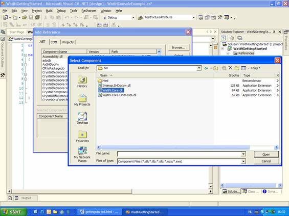
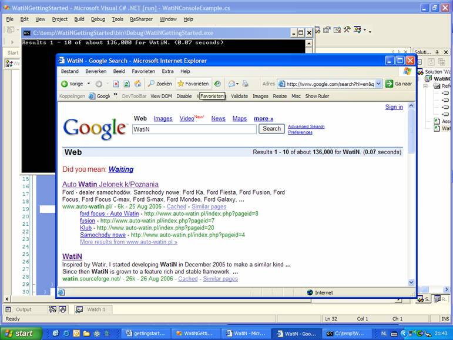

Getting started with WatiN
This article explains some of the basics to get you up and running to automate your web applications with WatiN. A German version is also available here.
Index
- Download and install WatiN.
- Using WatiN from a console application.
- Using IE Developer Toolbar with WatiN.
Download and install WatiN
If you haven't already done this, you should download the latest release of WatiN WatiN. Alternatively you could get the latest source from the Subversion repository (using TortoiseSVN) and build it yourself. After you downloaded the version run the installer or Unzip the download in a directory. Lets assume you used the msi installer, then WatiN will be installed in c:\Program Files\WatiN\<version>-<.net version>
Using WatiN from a console application
Start your favourite .Net ide. In this example I will use Visual Studio 2003. Create a new console application named WatiNGettingStarted. Next, add a reference to WatiN.Core.dll by opening the Add Reference dialog and selecting the assembly from the WatiN installation directory.


Rename the file Class1.cs to WatinConsoleExample.cs and replace
the existing code with the following code. This code will:
- Open a new Internet Explorer window and go to the Google.com website (it might be redirected to a localised version).
- Type the text WatiN in the search text field which can be uniquely identified in the html code by the name q.
- Click the search button which can be uniquely identified by the text Google Search (this is the value attribute of the html input element).
using System;
using WatiN.Core;
namespaceWatiNGettingStarted
{
class WatiNConsoleExample
{
[STAThread]
static void Main(string[] args)
{
// Open a new Internet Explorer window and
// goto the google website.
IE ie = new IE("http://www.google.com");
// Find the search text field and type Watin in it.
ie.TextField(Find.ByName("q")).TypeText("WatiN");
// Click the Google search button.
ie.Button(Find.ByValue("Google Search")).Click();
// Uncomment the following line if you want to close
// Internet Explorer and the console window immediately.
//ie.Close();
}
}
}
Build and start the project and see Internet Explorer go to the Google website, search for WatiN and finally show the results webpage.
Using IE Developer Toolbar with WatiN
Lets make this example a bit more interesting by writing the results statistics to the console window.
First we need to find out how we can get this information from the Google results webpage by using WatiN. Lets inspect the webpage with the Internet Explorer Developer toolbar (this is a must have if you want to do serious web automation!).

After opening the Dom Explorer with the View DOM button from the DevToolBar, select Select element by click in the Find menu and click on the results table cell on the webpage. The DOM Explorer then shows where the table cell is located in the DOM hierarchy (see screenshot).
Since the results table cell hasnt a unique identifier, like an Id or name, we cant get a reference to the table cell in an easy way. We need to use the hierarchy of the html elements in the page to get to the results table cell. First lets concentrate on finding the table the results table cell is located in. The table is the third table so we could use the Table collection to get a reference to this table. The code would look like this:
Table table = ie.Tables[2];
There is another way to get this same table, using the classname of this Table. Since no other table has the classname t assigned to it, this makes it unique to the table we are looking for. To find this table by its classname we will use the Find.By factory method like this:
Table table = ie.Table(Find.By("classname","t"));
At this point we have a reference to the table the results statistics are in. Next, find the table row and table cell the actual info is located in.
Finding the right table row is simple, there is only one row (<TR>) in this table. To get the results table cell we will use the TableCells collection. The text in the second table cell (<TD>) contains the info we are looking for. This results in the following code:
string resultStats = table.TableRows[0].TableCells[1].Text;
The last thing we have to do is write this info to the Console window. And here is the final code for this example.
using System;
using WatiN.Core;
namespaceWatiNGettingStarted
{
class WatiNConsoleExample
{
[STAThread]
static void Main(string[] args)
{
// Open an new Internet Explorer Window and
// goto the google website.
IE ie = new IE("http://www.google.com");
// Find the search text field and type Watin in it.
ie.TextField(Find.ByName("q")).TypeText("WatiN");
// Click the Google search button.
ie.Button(Find.ByValue("Google Search")).Click();
// Find the table cell which shows the search result statistics.
Table table = ie.Table(Find.By("classname","t"));
string resultStats = table.TableRows[0].TableCells[1].Text;
// Write these statistics to the console window.
Console.WriteLine(resultStats);
// Uncomment the following line if you want to close
// Internet Explorer and the console window immediately.
//ie.Close();
}
}
}
Build and start the project and youll see something like this:

And now its up to you. Enjoy testing with WatiN!